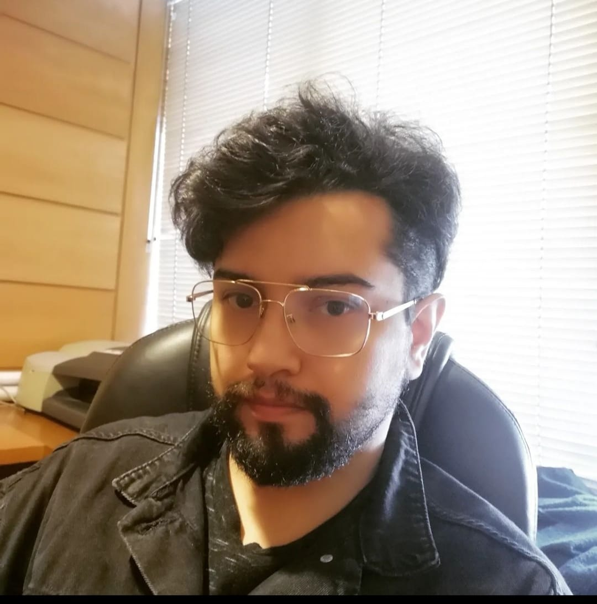

About me

born in 1990 in Santiago, Chile. I firmly believe that web design has the potential to be more diverse and, above all, inspiring. My approach is based on the belief that every website can be a masterpiece of creativity and functionality. Through my experience and passion, I seek to elevate web design to a higher level, constantly exploring new ideas and approaches.
My vision as a web designer is to inspire and elevate the perception of online design. I dream of an internet where each website is a unique and captivating experience. I want to demonstrate that web design is not limited to pre-established conventions, but can be a means for innovation, expression, and meaningful connection. My goal is to motivate others to think outside the box and explore new possibilities in web design.
My mission is to introduce the world to the infinite possibilities of web design. To achieve this, I am committed to continuing to experiment and challenge established norms in digital design. I constantly seek new forms of expression and functionality, embracing creativity in every project I undertake. Through my work, I hope to inspire other designers and clients to embrace diversity and innovation in web design.